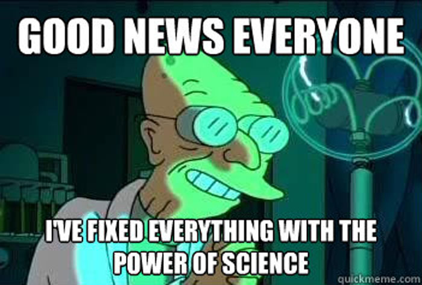

PHP Unit Testing Simplified
Jason Hinkle - Eventric, Chicago IL
github.com/jasonhinkle
Required Components
- OSX, *nix or Windows
- PHP 5.3.3 (or higher)
- Web server w/ PHP Configured
- Java Runtime
- Firefox
Selenium Product Confusion
Components and Versions and Plugins, Oh My!
- Selenium 1 vs. Selenium 2
- Selenium RC vs. Selenium WebDriver
- Selenium IDE
- Selenium Formatters
The download page has 100s of downloads!
Online Help is of Little Help
- Major breaking syntax changes between v1 and v2.
- Headless browser testing requires v2.
- Most online examples are for v1.
- Selenium+PhantomJS tutorials are incorrect.
- Current PhantomJS (2.0) binary release is broken!
AAAAAAAAAHHHH!!!

We only care about these:
- PHPUnit 4.8
- Selenium Stand-Alone Server 2.47.0
- Selenium IDE 2.9.0
- Selenium 2 PHP Formatter
- PhantomJS 2.0 (Patched)
Let's install the tools...
PHPUnit Installation
Self-contained .phar instructions for *nix and Windows.

Selenium Server Installation
Save this .jar file somewhere convenient.

Selenium IDE Installation
Install this plugin using FireFox

PHP Formatter Installation
Install this plugin using FireFox

PhantomJS Installation

- Download binary and save in your PATH
- The official binary 2.0 is broken.
- My patched binaries for OSX or Ubuntu work.
Otherwise build from source or patch the official binary.
PHPUnit
Download self-contained phar file from phpunit.de and follow the instructions for OSX, *NIX or Windows)
Selenium
Download self-container .jar Selenium Standalone Server .jar file seleniumhq.org
TODO, More Info...

Contact me @jasonhinkle
Presentation materials are online at github.com/jasonhinkle/php-unittest-presentation